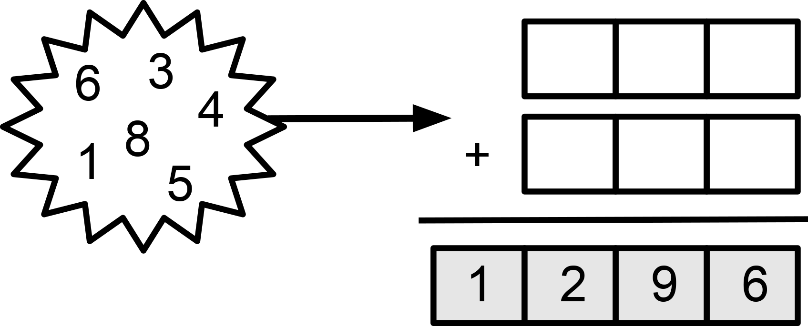

Problem
Arrange the numbers below in the white boxes to make the smallest possible sum.
Arrange the same numbers from part A) in the white boxes to make the largest possible sum.
Arrange the numbers below in the white boxes to make the given sum.

For each part, how many different solutions can you find?
Not printing this page? You can fill in the boxes on our interactive worksheet.
Solution
The strategy for creating the smallest (or largest) sum comes from realizing that the hundreds digit has the most influence on the size of a number, and the ones digit has the least influence on the size of a number.
When we are choosing the digits for the smallest sum, we want the smallest numbers in the hundreds column, the next smallest numbers in the tens column, and the largest numbers in the ones column. So, in our answer we want \(2\) and \(3\) in the hundreds column, \(5\) and \(6\) in the tens column, and \(7\) and \(8\) in the ones column.
When adding two numbers, the order of the numbers does not affect the sum, so we can arrange these digits in several different ways. It turns out there are a total of \(8\) solutions. They are all shown below.
\(\begin{array}{c c c c} &2&5&7\\ +&3&6&8\\ \hline \end{array}\) \(\begin{array}{c c c c} &3&6&8\\ +&2&5&7\\ \hline \end{array}\) \(\begin{array}{c c c c} &3&5&7\\ +&2&6&8\\ \hline \end{array}\) \(\begin{array}{c c c c} &2&6&8\\ +&3&5&7\\ \hline \end{array}\)
\(\begin{array}{c c c c} &2&6&7\\ +&3&5&8\\ \hline \end{array}\) \(\begin{array}{c c c c} &3&5&8\\ +&2&6&7\\ \hline \end{array}\) \(\begin{array}{c c c c} &3&6&7\\ +&2&5&8\\ \hline \end{array}\) \(\begin{array}{c c c c} &2&5&8\\ +&3&6&7\\ \hline \end{array}\)
In all arrangements, the sum is \(625\).
Using the strategy from part A), we can arrange the numbers to find the largest possible sum. This time, we want the largest numbers in the hundreds columns and the smallest numbers in the ones columns. As in part A), there are \(8\) possible solutions. They are all given below.
\(\begin{array}{c c c c} &8&6&3\\ +&7&5&2\\ \hline \end{array}\) \(\begin{array}{c c c c} &7&5&2\\ +&8&6&3\\ \hline \end{array}\) \(\begin{array}{c c c c} &7&6&3\\ +&8&5&2\\ \hline \end{array}\) \(\begin{array}{c c c c} &8&5&2\\ +&7&6&3\\ \hline \end{array}\)
\(\begin{array}{c c c c} &8&5&3\\ +&7&6&2\\ \hline \end{array}\) \(\begin{array}{c c c c} &7&6&2\\ +&8&5&3\\ \hline \end{array}\) \(\begin{array}{c c c c} &7&5&3\\ +&8&6&2\\ \hline \end{array}\) \(\begin{array}{c c c c} &8&6&2\\ +&7&5&3\\ \hline \end{array}\)
Again, the sum in all cases is the same: \(1615\).
We need some logic to narrow down the choices in this example. Since we know the ones digit of the sum is \(6\), then the ones digits for each of the two numbers being added must have a total of \(6\) or \(16\). The only possible combinations given the digits we have are \(1 + 5\) or \(5 + 1\). Since neither of these sums gives us \(16\), we do not have to worry about carrying a \(1\) into the tens column.
Looking at the tens column, we need two numbers that add up to \(9\) or \(19\). There is only one pair of the remaining digits we could use: \(3 + 6\) or \(6 + 3\). Neither of these sums gives us \(19\), so there is nothing to carry into the hundreds column. This means the sum of the hundreds column must be \(12\).
The remaining digits are \(4\) and \(8\), and fortunately the sum of these digits is \(12\).
As in parts A) and B), we can arrange these digits in \(8\) different ways. They are all given below.
\(\begin{array}{c c c c} &4&3&5\\ +&8&6&1\\ \hline \end{array}\) \(\begin{array}{c c c c} &8&6&1\\ +&4&3&5\\ \hline \end{array}\) \(\begin{array}{c c c c} &8&6&5\\ +&4&3&1\\ \hline \end{array}\) \(\begin{array}{c c c c} &4&3&1\\ +&8&6&5\\ \hline \end{array}\)
Teacher’s Notes
As noted in the solution, the order of the operands when we are adding does not affect the sum. This property of addition is called the commutative property. Addition and multiplication are commutative operators, but subtraction and division are not commutative.
Many algebraic proofs rely on understanding the fundamental rules that mathematical operators follow. Proofs generally require clear steps that show two expressions are actually equivalent. For a proof to be convincing, we need to justify each step with established rules. Knowing and understanding the commutative property and others such as the associative property and the distributive property allows us to write expressions in a different form, and hence are essential tools for mathematicians.